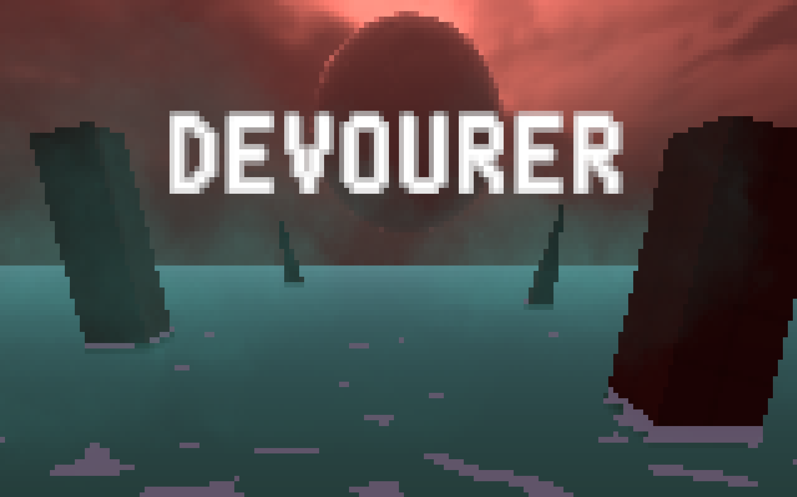

Devourer
Demo Video
Project Overview
A boomer-shooter + bullet heaven (inspired by ULTRAKILL and Megabonk) where your weapon grows infinitely. Each level unlocks a new stat type for your weapon to grow in.
Tools
- Unity
- Krita
Roles
- Gameplay Design
- Systems Design
- Programming
- Sound Design
- Technical Art
- 3D Art
- UI/UX
Design Breakdown

Core Mechanic / Gameplay Loop
In each level, a powerful boss arrives after a set timer. Until then, the player has to survive endlessly spawning minions and kills them for stats that grow their weapon. Stat growth are uncapped, so the player have to scale as much as they can before the boss arrives. Damage grows from level 1, fire rate is added at level 2, and magazine size at level 3, the final level.
Positive and Negative Feedback Loops
The game rewards good players but help less skilled players by incorporating positive and negative feedback loops.
Positive loop: the better the player performs, the more stats they earn, which makes them stronger.
Negative loop: each kill brings the boss slightly earlier, so less skilled players get more time to grow.
The level clear time is what separates them (A good player can clear the game under 4 minutes while a less skilled player takes up to 8 minutes).
The Death Mark
The death mark is an ultimate ability that charges over time and on kills. Activating it stops the player firing for five seconds but marks every enemy they look at, and when the timer ends, all marked enemies are instantly killed. The player chooses when to commit, usually when enemies have built up the most. Because it charges faster the more the player kills, stronger players can use it more often.
Designing for Game Feel
I used camera shake, VFX and screen effects to make hits and kills feel strong, taking inspiration from ULTRAKILL. I studied what made kills in ULTRAKILL satisfying and made changes, such as using white particles (instead of blood) for readability as there are many enemies. Firing, scoring a kill and taking damage all trigger a different camera shake with different strengths which quickly tells the player which is happening without being overwhelming. Chromatic Aberration and color shift are used to convey the deadliness of the death mark ability.
Links and Documents
The GDD covers each mechanic and the design and development process behind them.